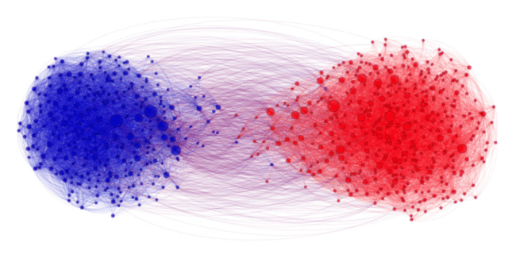

В статье обобщаются базовые понятия, необходимые для исследования и моделирования интернет-сетей.
В данном контексте буду считать понятия “сеть” и “граф” эквивалентными. Для разделения определений используется термин “интернет-сеть” или просто “интернет” (я пишу с маленькой буквы), как обобщение понятия среды (локальной или глобальной) взаимодействия интернет-пользователей. Этот термин не включает в себя вопрос интернет-транспорта - в случае, когда речь идет о маршрутизации, это будет указано отдельно. Под понятием “социальная сеть” понимаются интернет-приложения, основанные на взаимодействиях интернет-пользователей. Понятие “нода” и “узел”, а так же “ребро” и “связь” тождественно в данной статье.
Базовые определения и метрики
Графом называется структура, состоящая из узлов (нод), соединенных ребрами (связями).
Принято разделять графы на направленные (орграфы или directed graphs) и ненаправленные (undirected graphs). При аннотации графа запись определяет направление для направленного графа ( - ребро соединяет ноду по направлению к ноде ). В ненаправленных графах связи считаются двунаправленными.
Могут рассматриваться взвешенные сети. В этом случае связь между нодами можно записать так: .
Рассматриваются так же многослойные мультиплексные сети. В многослойных сетях каждый слой может строиться на разных наборах нод и/или ребер. Мультиплексные сети строятся на одном множестве нод/ребер. Мултиплексный граф можно отобразить в однослойный, определив разные типы ребер/нод. Темпоральный граф является частным случаем мультиплексного - в нем ребра или узлы являются динамическими и существуют только в определенном интервале времени. Отображение момента (или интервала) времени называется снапшотом графа. Каждый снапшот может интерпретироваться как слой мультиплекса. В общем случае в многослойных сетях могут сущестовать связи как внутри слоя, так и между слоями.
Частным случаем графа является двудольный граф - в нем ноды разделены на две группы так. что существуют только связи между нодами, принадлежащими разным группам.
В основном при анализе интернет-сетей приходится сталкиваться с направленными и ненаправленными графами, взвешенными графами, двудольными графами и мультиплексными сетями.
Полный (полносвязный) граф - это граф, в котором каждая нода соединена с каждой нодой. Для такого графа, если он ненаправленный, можно определить максимальное число связей, как:
Для направленного: , для двудольного:
Плотность графа определяет фактически существующую долю связей по отношению к числу связей полносвязного графа. Тогда разреженностью определяется доля отсутствующих ребер:
Очевидно, что в ненаправленном графе: , для направленного: , для полносвязного .
Граф можно считать разреженным, если по мере роста графа число связей в нем растет пропорционально или медленнее числу нод (). Если наблюдается более быстрый рост числа связей, то граф можно считать плотным (к примеру )
Подграф (подсеть) - выборка подмножества нод графа.
Клика - полносвзяный подграф
Эгосеть - подграф, состоящий из узла и его соседей. Эгосети часто рассматриваются при анализе социальных сетей. Понятие “соседей” здесь - это ноды графа, имеющие связи с рассматриваемым узлом. Из последнего происходит важная метрика: степень узла.
Степень узла определяется числом его соседей. Тогда средняя степень графа: , где в числителе по сути для ненаправленного графа. Тогда для ненаправленного графа. Исходя из этого разреженность ненаправленного графа можно определить через среднюю степень узла как . То же самое можно вывести и для направленного графа, подразумевая, что у узла есть и . Очевидно, что для любого полносвязного графа.
При анализе социальных сетей рассматривают понятие ассортативности - схожести узлов на основе их признаков. Гомофилия сети определяет, что связи между ассортативными узлами более вероятны. Степенная корреляция - ассортативность на основе степени. В этом случае ноды с высокими степенями соединены с нодами с высокой степенью, а ноды с низкой - с низкостепепенными. Такие сети называются ассортативными (обратное указанному состояние - диссортативные сети)
Для взвешенных графов можно определить взвешенную степень (силу) узла - это сумма всех весов его связей: . Для направленного графа так же определяется и : , а . При этом мы делаем допущение, что если между нодами нет связей, то
Важным понятием является матрица смежности графа - это матрица , где каждый элемент отображает связь между узлами (строки) и (столбцы). В ненаправленных графах матрицы смежности симметричны относительно диагонали (т.е. связи двунаправленные) и мы можем считать половину матрицы избыточной. Мы можем отображать в матрице как наличие связи, так и количество связей или их вес.
Сама по себе матрица неэффективна для хранения графа (из-за квадратичной сложности по пространству), хотя и очень эффективна в вычислительном плане благодаря матричным операциям. Часто графы сильно разрежены - тогда матрица харнит в основном нули. Чтобы избежать неэффективности часто графы хранят в списках смежности - это структуры, в которых сохраняются соседи для каждого узла. Еще один способ хранения - хранить список соседних нод для нод и/или пары узлов для ребер.
Путь - это непрерывная последовательность ребер. Число ребер определяет длину пути. Цикл - это путь, который можно замкнуть (это важно, так как во многих графовых алгоритмах делаются допущения об ацикличности графа). Простой путь никогда не проходит одно и то же ребро дважды. Кратчайший путь - путь с наименьшей из возможных длиной. Многие задачи в анализе сетей сводятся к поиску/прпедсказанию путей и поиску кратчайшего пути. Средняя длина пути в графе - это усредненное значение длин кратчайших путей между всеми нодами: , где длина кратчайшего пути между и . Для направленной сети .
Диаметр сети - это максимальная длина кратчайшего пути между всеми нодами графа.
Связность сети - это мера количества связей в сети. Чем меньше связей и ниже плотность сети, тем более вероятно, что сеть несвязна. Если сеть несвязна, то можно выделить ее связные компоненты - это связные подграфы несвязной сети. Для ненаправленной сети определяют, что в таких компонентах есть путь, соединяющий каждую ноду, но нет пути наружу. В направленной сети выделяют слабосвязные компоненты и сильносвязные компоненты. Слабосвязными являются компоненты, которые можно было бы считать связными только при условии удаления направления связи.
Существует несколько подхода к вычислению расстояний в несвязной сети: измерять расстояние только в главной компоненте (самой большой связной компоненте графа) или можно вычислять расстояния для каждой из компонент, а затем делать обобщение. Средняя длина для несвязной сети вычислительно неразрешима (из-за неопределенности деления на 0). Можно использовать следующий трюк (пример для ненаправленной сети):
Часто рассматривается особый подтип сети, дерево - это такой граф, для которого удаление любой связи приводит к разделению на две компоненты. В деревьях нет циклов и существует только один путь между любой парой узлов. Для деревьев принято выделять какой-то узел как корень, таким образом деревья имеют иерархическую структуру.
Важным показателем сети является ее коэффициент кластеризации, который определяет долю пар соседей узла, соединенных друг с другом. Иными словами, этот коэффициент определяет количество треугольников, образуемых узлом совместно с соседями. , где - это число треугольников, включающих ноду . определен только для числа соседей , так как, в противном случае, треугольник невозможен. Коэффициент кластеризации всей сети в целом - узлы со степенями не рассматриваются.